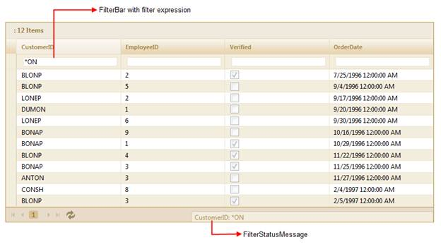
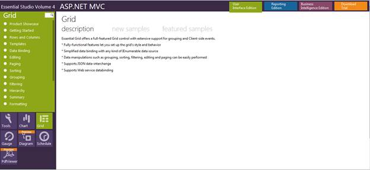

The filter bar feature allows the grid to filter records with different expressions depending upon the column type. The filter bar will be displayed at the top of the grid below the header row.
The filter bar allows you to filter expressions and get the data you want to filter by manually entering data, unlike the default filter. This allows you to filter the values you want, with ease.
The following figure gives you a basic idea of the appearance of the filter bar in the MVC grid:

Figure 125: Grid with Filter Bar and Filter Status Message Bar
Use Case Scenario
The user can filter data quickly by entering the filter expressions manually in the filter bar.
This feature is very user friendly to advanced users, as the following filter options are available with this feature:
· "<", ">", ">=", ">=", "=" for integer, double, decimal, date-time data columns
· "*value" (contains value), "%value" (ends with value),"value%" (begins with value) for string data columns
· "1"(true), "0"(false) for Boolean data columns
· "Expression1 and Expression2", "Expression1 or Expression2" for all data columns
Sample Link
To view the samples:
1. Open the Syncfusion Dashboard. The Essential Studio Enterprise Edition window is displayed. The User Interface Edition panel is displayed by default.
2. Click the Run Locally Installed Samples link. The Essential Studio MVC Edition sample browser is displayed.
3. Select Grid.
4. Select FilterBar samples from the Filtering tab provided and browse through the features.

Figure 126: MVC Grid Sample Browser
 Properties
Properties